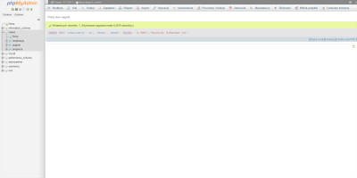
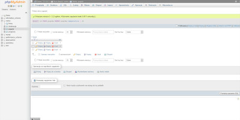
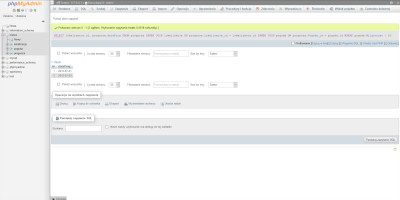
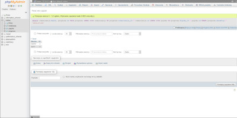

STACJA METEO
Dokumentacja wyników zapytań w bazie Meteo




Zmiana jednostek temperatury
Temperatura w °C:
Zamaiana na:
Kelwiny
Farenheity
Do pobrania:
Kwerendy
Eksport MySQL
AGATA DOBRZYNIEWICZ 123456789